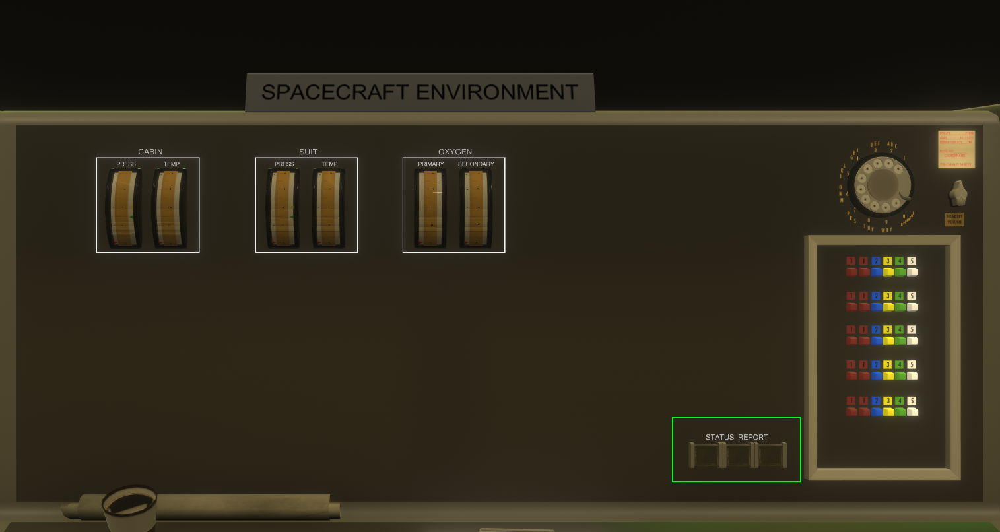
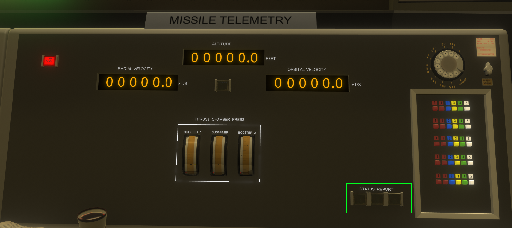

Manual version 0.67.0.1-git
This manual isn't necessarily realistic, and is not crew-rated.
When you enter, you will be looking at the capsule communicator position. For the benefit of this manual, we'll start-out with the CAPCOM-role, since that's where you'll be dropped by default.
First, in the white rectangle, you'll see your sign. Whenever you're in a seat, the sign will tell you which seat you're in. Additionally, your position will show up in the chat.
Second, in the green rectangle, you'll see your status-indicator. This is how you indicate to the flight-controller if you're ready to proceed or not. By default, none of the buttons will be lit. Pressing an unlit button changes the status of the seat. Pressing a lit button turns off the status-report, which can be used to indicate that the seat is vacant. It's recommended that a crewed station is set to amber(yellow, center) outside of GO/NOGO-calls. If something isn't GO on your station, change it to red and call out reason in chat (more on that later).
Most things are unique to each station. One of these things is the mission state indicator (red rectangle). This is used to tell you where in the mission you are.
The purple rectangle shows you the current Mission Elapsed Time (MET) and Greenwich Mean Time (GMT). MET shows you how long it is since the launch.
The buttons in the blue rectangle is used to select camera for the screen in the yellow rectangle. This is used to watch the launch.
If you want to stay in the CAPCOM-position, please select it in the view-menu so that you're properly seated. If the view-menu isn't visible to you, press V.
If you look around, you may see the avatars of others. Above the avatars, you'll see their usernames. If you're overlapping with someone, you'll not see them. You can customize your avatar in the profile-part of the game settings-menu.
It's recommended that the first person to enter MCC temporarily switches to the Flight Director-position to temporarily halt the countdown. See Flight Director to see how.

If you do not have the intercom and radio-messages open, press C. The buttons in the red rectangle allow you to select which rooms you receive messages from, and you can "listen" to both rooms at the same time if you want. In this example, the user is receiving messages from the mission control room only. Radio-messages are color-coded so you know which room they're from, with blue for messages in the mission-control room. You'll also notice that the messages also indicate the then-current position of the person. The buttons in the green rectangle allows you to select which room you're sending a message to. Historically, you'd listen to multiple rooms but only speak to capsule if you're CAPCOM, but in MCL that's up to you.
(Assuming default controls) Arrow-keys are used to walk around without changing seat. Holding the middle mouse button lets you pitch and yaw the view, scroll wheel zooms.
F1-11 lets you change to some of the views, a list of views is available if you press V, and a chat-window is viewable if you press C.

The flight-director mission-status (green rectangle) is special. It doesn't have an amber button (because if the flight-director doesn't know if they're there you've got bigger problems), and when you press the red button pre-launch you can halt the countdown.
The red rectangle marks where the flight-director sees the status of each of the seats. In this case, all the seats were unoccupied and so all the lights are unlit. In case of an abort, the flight-director presses the abort-button, which lights the abort-light in the capsule.






Effectively INOP
Effectively INOP
Effectively INOP

Monitors above height sea-level for recovery